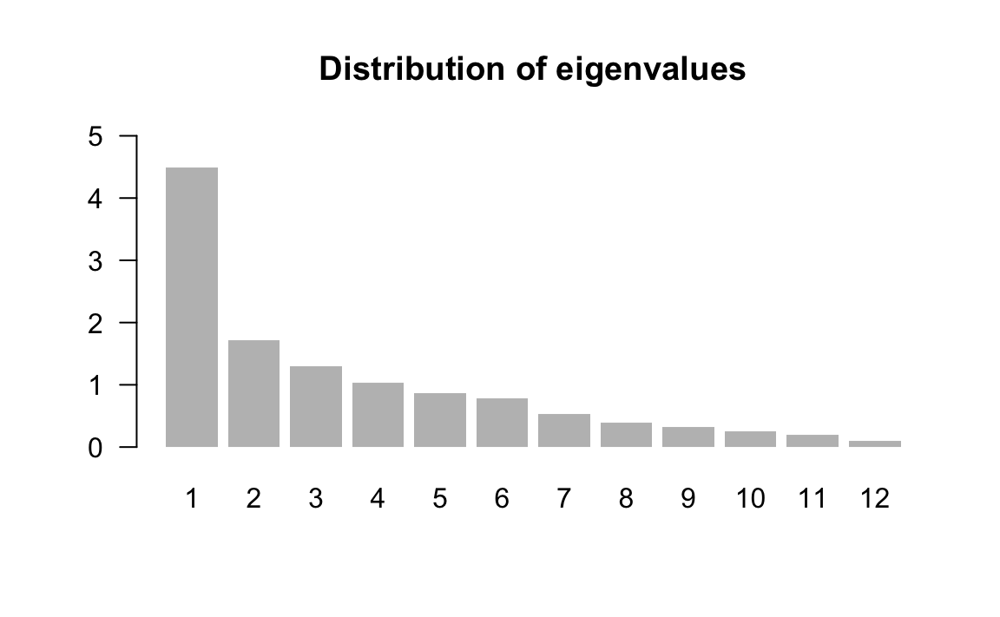

2.3 Beyond the First Factor
The most striking fact from the results discussed so far is the so-called size factor (or size effect) which is extremely dominant in our working example. This size factor, reflected in the first principal component, exclusively shows the salary inequality among the cities. The rest of the factors are somewhat “squeezed” by the strength of this phenomenon in the data table.
When a size factor dominates the analysis, it is interesting to rerun a Principal Component Analysis but controlling (eliminating) for the size effect. This involves taking into account the previous knowledge about the salaries in the cities in order to go beyond their salary inequality.
A simple way to achieve this consists of dividing the salaries of each profession by the mean salary in each city, thus eliminating the aforementioned effect of salary inequality. The mean salary of a city can be obtained as the average of the salaries in that city. However, we have decided to obtain the mean salaries of cities in a slightly different form: as the product of the net hourly salary times the number of hours worked per year (i.e. the product of columns net_hourly_salary and work_hours_year).
At the same time, we have decided to create two new artificial variables (for illustrative purposes). One indicates the “salary inequality” of each city: as the difference between its higher salary and its lower salary, with respect to mean salary of the city:
\[ \text{salary inequality} = \frac{\text{salary}_{max} - \text{salary}_{min}}{\text{mean salary of the city}} \]
Another variable about the salary of the manual jobs with a certain qualification, is obtained as the mean salary of mechanic and metalworker:
\[ \text{qualified manual jobs} = \frac{\texttt{mechanic} + \texttt{metalworker}}{2 \times \text{mean salary of the city}} \]
The new data table contains 12 new variables of salaries (quotient between the salary of a profession relative to the mean salary of the city). We can then perform a Principal Component Analysis on this new table. The table 2.5 contains the summary statistics of these new 12 active variables:
| weight | mean | stdev | min | max | |
|---|---|---|---|---|---|
| teacher2 | 51 | 1.19 | 0.37 | 0.37 | 2.07 |
| bus_driver2 | 51 | 1.04 | 0.25 | 0.46 | 1.69 |
| mechanic2 | 51 | 0.96 | 0.24 | 0.14 | 1.47 |
| construction_worker2 | 51 | 0.72 | 0.27 | 0.13 | 1.17 |
| metalworker2 | 51 | 1.17 | 0.22 | 0.50 | 1.88 |
| cook_chef2 | 51 | 1.40 | 0.62 | 0.48 | 3.50 |
| factory_manager2 | 51 | 2.63 | 1.32 | 1.37 | 6.96 |
| engineer2 | 51 | 2.12 | 0.76 | 1.14 | 4.37 |
| bank_clerk2 | 51 | 1.51 | 0.62 | 0.77 | 3.50 |
| executive_secretary2 | 51 | 1.13 | 0.28 | 0.76 | 2.07 |
| salesperson2 | 51 | 0.76 | 0.16 | 0.37 | 1.13 |
| textile_worker2 | 51 | 0.68 | 0.18 | 0.22 | 1.09 |
We can see that the best paid profession is factory_manager which, in average, is two and half times above the mean salary. In contrast, the worst paid profession if textile_worker with a salary of 2/3 the mean salary.
When looking at the matrix of correlations (see table 2.6) we now have values that are very different from table 1.1. These new correlations are actually partial correlations, because we have removed the effect that is due to the salary level per city.
| tea2 | bus2 | mec2 | con2 | met2 | coo2 | dep2 | eng2 | ban2 | exe2 | sal2 | tex2 | |
|---|---|---|---|---|---|---|---|---|---|---|---|---|
| tea2 | 1.00 | |||||||||||
| bus2 | 0.38 | 1.00 | ||||||||||
| mec2 | -0.33 | 0.00 | 1.00 | |||||||||
| con2 | 0.24 | 0.34 | 0.31 | 1.00 | ||||||||
| met2 | 0.06 | 0.14 | 0.15 | 0.08 | 1.00 | |||||||
| coo2 | -0.12 | -0.42 | -0.26 | -0.51 | -0.38 | 1.00 | ||||||
| dep2 | -0.12 | -0.24 | -0.41 | -0.63 | -0.19 | 0.37 | 1.00 | |||||
| eng2 | -0.15 | -0.40 | -0.35 | -0.72 | -0.16 | 0.52 | 0.57 | 1.00 | ||||
| ban2 | -0.08 | -0.16 | -0.38 | -0.37 | -0.51 | 0.32 | 0.59 | 0.38 | 1.00 | |||
| exe2 | -0.39 | -0.50 | -0.37 | -0.62 | -0.33 | 0.48 | 0.38 | 0.54 | 0.42 | 1.00 | ||
| sal2 | -0.02 | -0.07 | -0.09 | -0.16 | -0.36 | -0.03 | 0.06 | 0.19 | 0.10 | 0.12 | 1.00 | |
| tex2 | 0.25 | 0.38 | -0.14 | 0.41 | 0.06 | -0.51 | -0.48 | -0.31 | -0.35 | -0.26 | 0.05 | 1 |
Observe that we now have negative correlations, indicating that when a profession is well paid in a given city, it is detrimental to other profession (values below 0.28 in absolute value, indicate correlations non-significantly different from zero).
The diagonalization of the correlation matrix provides the eigenvalues displayed in table 2.7:
| num | eigenvalues | percentage | cumulative |
|---|---|---|---|
| 1 | 4.4910 | 37.43 | 37.43 |
| 2 | 1.7148 | 14.29 | 51.72 |
| 3 | 1.2989 | 10.82 | 62.54 |
| 4 | 1.0396 | 8.66 | 71.20 |
| 5 | 0.8699 | 7.25 | 78.45 |
| 6 | 0.7831 | 6.53 | 84.98 |
| 7 | 0.5309 | 4.42 | 89.40 |
| 8 | 0.3874 | 3.23 | 92.63 |
| 9 | 0.3210 | 2.67 | 95.31 |
| 10 | 0.2561 | 2.13 | 97.44 |
| 11 | 0.2021 | 1.68 | 99.12 |
| 12 | 0.1052 | 0.88 | 100.00 |

The projection of the new (transformed) variables on the three axes obtained in the second analysis, are contained in the table 2.8 shown below
| coord1 | coord2 | coord3 | cor1 | cor2 | cor3 | |
|---|---|---|---|---|---|---|
| teacher2 | -0.31 | 0.69 | 0.30 | -0.31 | 0.69 | 0.30 |
| bus_driver2 | -0.56 | 0.47 | 0.13 | -0.56 | 0.47 | 0.13 |
| mechanic2 | -0.42 | -0.72 | -0.25 | -0.42 | -0.72 | -0.25 |
| construction_worker2 | -0.81 | 0.04 | -0.22 | -0.81 | 0.04 | -0.22 |
| metalworker2 | -0.42 | -0.31 | 0.69 | -0.42 | -0.31 | 0.69 |
| cook_chef2 | 0.72 | -0.08 | 0.06 | 0.72 | -0.08 | 0.06 |
| factory_manager2 | 0.75 | 0.17 | 0.28 | 0.75 | 0.17 | 0.28 |
| engineer2 | 0.79 | 0.05 | 0.15 | 0.79 | 0.05 | 0.15 |
| bank_clerk2 | 0.66 | 0.33 | -0.11 | 0.66 | 0.33 | -0.11 |
| executive_secretary2 | 0.77 | -0.07 | -0.14 | 0.77 | -0.07 | -0.14 |
| salesperson2 | 0.19 | 0.26 | -0.66 | 0.19 | 0.26 | -0.66 |
| textile_worker2 | -0.57 | 0.43 | -0.19 | -0.57 | 0.43 | -0.19 |
The first component shows the opposition of executive_secretary, factory_manager, engineer, cook_chef, and bank_clerk against the rest of the professions, and in particular with construction_worker.
The second axis is formed by the professions mechanic, and metal_worker, opposed to teacher, bus_driver, and textile_worker.
Having eliminated the size factor in this second analysis, we can say that the first factorial plane provides the structure of association among the professions with a constant global salary, with respect to all the cities (see figure 2.9).

Figure 2.9: Circle of correlations on the first factorial plane of the second analysis
The results regarding the cities are shown in table 2.9
| city | wgt | disto | coord1 | coord2 | contr1 | contr2 | cosqr1 | cosqr2 | |
|---|---|---|---|---|---|---|---|---|---|
| 1 | AbuDhabi | 1.96 | 55.78 | 6.11 | 2.41 | 16.28 | 6.65 | 0.67 | 0.10 |
| 2 | Amsterdam | 1.96 | 6.40 | -1.67 | 1.30 | 1.22 | 1.93 | 0.44 | 0.26 |
| 3 | Athens | 1.96 | 6.94 | -1.62 | 0.77 | 1.15 | 0.68 | 0.38 | 0.09 |
| 4 | Bangkok | 1.96 | 36.42 | 4.45 | -0.44 | 8.65 | 0.22 | 0.54 | 0.01 |
| 5 | Bogota | 1.96 | 19.81 | 2.85 | -1.18 | 3.56 | 1.59 | 0.41 | 0.07 |
| 6 | Mumbai | 1.96 | 6.23 | 0.39 | 0.27 | 0.07 | 0.09 | 0.02 | 0.01 |
| 7 | Brussels | 1.96 | 2.32 | -0.92 | 0.25 | 0.37 | 0.07 | 0.36 | 0.03 |
| 8 | Budapest | 1.96 | 2.73 | -0.15 | 0.17 | 0.01 | 0.03 | 0.01 | 0.01 |
| 9 | BuenosAires | 1.96 | 38.32 | 4.21 | -0.04 | 7.76 | 0.00 | 0.46 | 0.00 |
| 11 | Caracas | 1.96 | 37.27 | 4.46 | -0.03 | 8.68 | 0.00 | 0.53 | 0.00 |
| 12 | Chicago | 1.96 | 12.31 | -2.61 | -0.86 | 2.98 | 0.85 | 0.55 | 0.06 |
| 13 | Copenhagen | 1.96 | 5.26 | -1.53 | -0.85 | 1.02 | 0.83 | 0.44 | 0.14 |
| 14 | Dublin | 1.96 | 3.58 | -0.85 | 1.22 | 0.31 | 1.70 | 0.20 | 0.42 |
| 15 | Dusseldorf | 1.96 | 4.51 | -0.99 | 1.60 | 0.42 | 2.93 | 0.22 | 0.57 |
| 16 | Frankfurt | 1.96 | 3.19 | -0.51 | 1.07 | 0.11 | 1.30 | 0.08 | 0.36 |
| 17 | Geneva | 1.96 | 4.86 | -1.51 | 0.98 | 0.99 | 1.10 | 0.47 | 0.20 |
| 18 | Helsinki | 1.96 | 3.53 | -1.55 | 0.26 | 1.05 | 0.08 | 0.68 | 0.02 |
| 19 | Hongkong | 1.96 | 28.00 | 0.64 | 3.40 | 0.18 | 13.18 | 0.01 | 0.41 |
| 20 | Houston | 1.96 | 5.56 | -1.59 | -0.80 | 1.11 | 0.74 | 0.46 | 0.12 |
| 21 | Jakarta | 1.96 | 23.97 | 0.32 | -4.12 | 0.05 | 19.36 | 0.00 | 0.71 |
| 22 | Johannesburg | 1.96 | 8.74 | 0.07 | -1.51 | 0.00 | 2.61 | 0.00 | 0.26 |
| 24 | Lagos | 1.96 | 11.51 | -0.84 | -1.86 | 0.31 | 3.95 | 0.06 | 0.30 |
| 25 | Lisbon | 1.96 | 3.02 | -0.65 | 0.31 | 0.19 | 0.11 | 0.14 | 0.03 |
| 26 | London | 1.96 | 5.22 | -1.81 | -0.28 | 1.44 | 0.09 | 0.63 | 0.01 |
| 27 | LosAngeles | 1.96 | 14.72 | -3.01 | -0.24 | 3.95 | 0.07 | 0.61 | 0.00 |
| 28 | Luxembourg | 1.96 | 15.85 | -1.12 | 2.89 | 0.54 | 9.56 | 0.08 | 0.53 |
| 29 | Madrid | 1.96 | 1.99 | -0.07 | 0.05 | 0.00 | 0.00 | 0.00 | 0.00 |
| 30 | Manama | 1.96 | 30.51 | 4.09 | 0.75 | 7.32 | 0.64 | 0.55 | 0.02 |
| 31 | Manila | 1.96 | 7.96 | 1.95 | 0.35 | 1.65 | 0.14 | 0.48 | 0.02 |
| 32 | Mexico | 1.96 | 17.53 | 0.42 | -1.71 | 0.08 | 3.35 | 0.01 | 0.17 |
| 33 | Milan | 1.96 | 4.62 | -1.20 | 0.44 | 0.63 | 0.23 | 0.31 | 0.04 |
| 34 | Montreal | 1.96 | 4.21 | -1.75 | -0.39 | 1.34 | 0.17 | 0.73 | 0.04 |
| 35 | Nairobi | 1.96 | 39.30 | 4.67 | -2.27 | 9.50 | 5.89 | 0.55 | 0.13 |
| 36 | NewYork | 1.96 | 3.79 | -1.51 | -0.17 | 0.99 | 0.03 | 0.60 | 0.01 |
| 37 | Nicosia | 1.96 | 5.49 | -1.20 | 0.80 | 0.63 | 0.73 | 0.26 | 0.12 |
| 38 | Oslo | 1.96 | 4.79 | -1.54 | -0.14 | 1.04 | 0.02 | 0.50 | 0.00 |
| 39 | Panama | 1.96 | 17.66 | 2.32 | 0.90 | 2.36 | 0.93 | 0.31 | 0.05 |
| 40 | Paris | 1.96 | 5.14 | 0.81 | 1.28 | 0.29 | 1.86 | 0.13 | 0.32 |
| 41 | Prague | 1.96 | 7.22 | -0.60 | -1.40 | 0.16 | 2.23 | 0.05 | 0.27 |
| 42 | RiodeJaneiro | 1.96 | 25.04 | 3.07 | 0.28 | 4.11 | 0.09 | 0.38 | 0.00 |
| 43 | SaoPaulo | 1.96 | 9.06 | 0.95 | -2.00 | 0.40 | 4.58 | 0.10 | 0.44 |
| 44 | Seoul | 1.96 | 2.24 | -0.79 | 0.02 | 0.28 | 0.00 | 0.28 | 0.00 |
| 45 | Singapore | 1.96 | 14.77 | -0.28 | -1.14 | 0.03 | 1.48 | 0.01 | 0.09 |
| 46 | Stockholm | 1.96 | 8.11 | -1.90 | 0.29 | 1.57 | 0.10 | 0.44 | 0.01 |
| 47 | Sidney | 1.96 | 3.59 | -0.66 | 0.40 | 0.19 | 0.19 | 0.12 | 0.05 |
| 48 | Taipei | 1.96 | 7.90 | -1.40 | -1.13 | 0.86 | 1.46 | 0.25 | 0.16 |
| 49 | Tel-Aviv | 1.96 | 6.51 | -0.28 | -1.53 | 0.03 | 2.68 | 0.01 | 0.36 |
| 50 | Tokyo | 1.96 | 2.50 | -0.84 | 0.38 | 0.31 | 0.17 | 0.28 | 0.06 |
| 51 | Toronto | 1.96 | 7.00 | -2.38 | -0.24 | 2.47 | 0.06 | 0.81 | 0.01 |
| 52 | Vienna | 1.96 | 1.93 | -1.02 | -0.21 | 0.45 | 0.05 | 0.54 | 0.02 |
| 53 | Zurich | 1.96 | 7.08 | -1.46 | 1.68 | 0.92 | 3.21 | 0.30 | 0.40 |
There are few cities farther apart from the center of gravity: Abu Dhabi, Nairobi, and Buenos Aires. Figure 2.10 shows the factorial plane. On the right side we find the cities with salaries of “managerial” professions relatively higher. To the left of the graph we find cities that could be labeled as more “egalitarian” (in terms of their salaries).

Figure 2.10: Projection of the individuals in the first factorial plane
In the lower half of the graph we find cities that provide more value to the qualified manual jobs, whereas the upper half of the graph contains cities that tend to provide more value to the public service types of jobs.
All these results suggest that the salaries can be explained from the level of salaries of each city (first factor from first analysis), the degree of “egalitarianism” between professions and the orientation of the types of jobs (manual jobs versus service jobs).